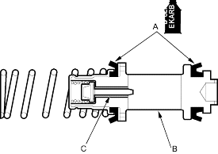
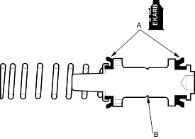
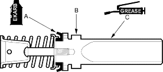
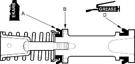
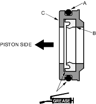

- Coat the cups (A) of a new primary piston (B) with clean brake fluid, then install the primary piston into the master cylinder.
NOTE: On vehicle's with ABS, check that the valve stem (C) moves smoothly by lightly pushing it through the slot in the piston. Install the piston so the slot in the piston aligns with the stop pin hole in the master cylinder.
With ABS

Without ABS

- Coat the cup (A) of a new secondary piston (B) with clean brake fluid.
Dual Brake Booster (7 + 8 in.) Type

Single Brake Booster (9 in.) Type

- Apply recommended seal grease in the master cylinder seal set to the piston surface (C) (dual brake booster type) or secondary cup (D) (single brake booster type), then install the secondary piston into the master cylinder.
- For dual brake booster type only; apply recommended seal grease in the master cylinder seal set to a new O-ring (A) and the secondary cup (B) in a new piston guide (C), then install the piston guide into the master cylinder. Note the direction.
